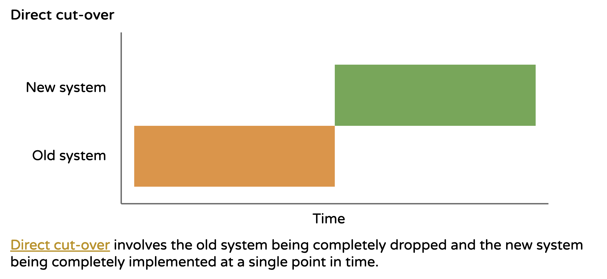
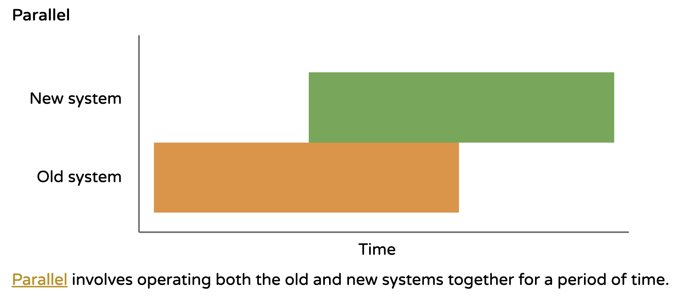
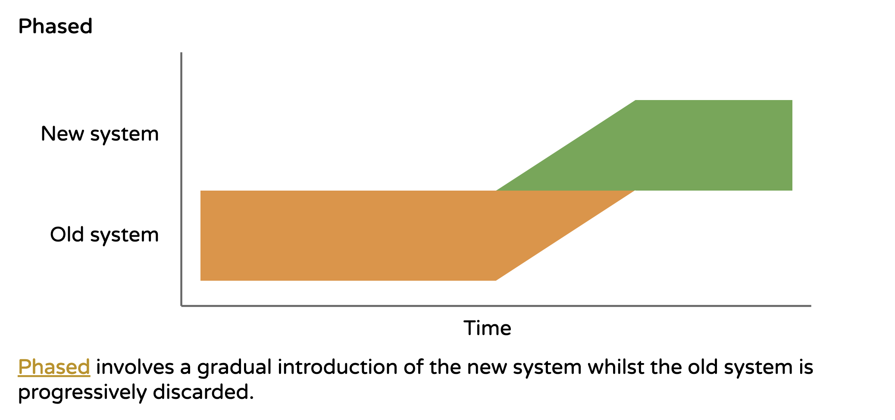
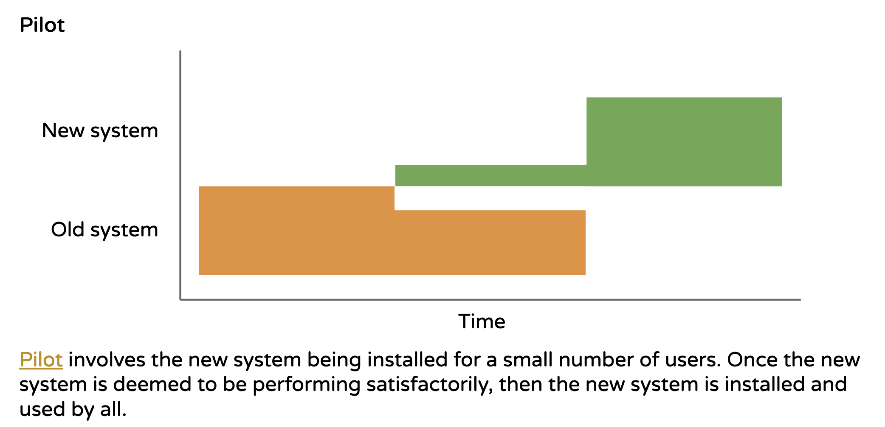

Syllabus
Investigate types of software implementation methods, including:
- direct
- phased
- parallel
- pilot
Learning Intention and Success Criteria
Learning Intention - Students will:
- Understand the different methods of software implementation and how they can be used to transition from an old system to a new system effectively.
Success Criteria - Students can:
- Identify and describe the four main methods of software implementation.
- Explain the advantages and disadvantages of each implementation method.
- Recognise scenarios where each implementation method would be most appropriate.
Content
When a new software system is ready to be implemented, it is essential to choose the most appropriate method for installation. This process is commonly referred to as system conversion and involves transitioning from an existing system to the new one. The method chosen depends on several factors such as the size of the organisation, the critical nature of the system, and the risks associated with the transition. The four common methods of software implementation are Direct, Parallel, Phased, and Pilot. Each method has its own advantages and is suited to specific circumstances.
Direct
In direct conversion (also known as "direct cut-over"), the old system is entirely replaced by the new system at a specific point in time. The old system is immediately discontinued, and the new system begins full operation. This method is often used when it is impractical to operate both systems simultaneously. For direct conversion to succeed, the new system must be thoroughly tested, and users must be fully trained before the switchover.
One of the main benefits of direct conversion is that it is fast and clean—the organisation does not have to maintain two systems at once. However, this method carries significant risk. If the new system has any issues or errors, the organisation could face operational disruptions because there is no backup system in place.
Example: A bank installing new ATMs with advanced features such as a touch screen would likely use direct conversion. It would be impractical to have old and new ATMs operating side by side, as it would confuse customers and duplicate work.

Parallel
Parallel conversion involves running both the old and new systems simultaneously for a period of time. This method allows users to gradually familiarise themselves with the new system while retaining the security of the old system. If any problems occur with the new system, the old system is still available as a backup, ensuring no data is lost.
While parallel conversion reduces the risk of failure, it is resource-intensive. Users are required to perform tasks on both systems, effectively doubling their workload until the new system is fully operational and proven to meet requirements.
Example: A hospital installing new life support systems could use parallel conversion. Staff would continue to monitor patients manually while becoming familiar with the automated monitoring system, ensuring patient safety throughout the transition.

Phased
In phased conversion, the new system is introduced gradually, often in stages or modules. As parts of the new system are implemented, the corresponding parts of the old system are removed. This method is particularly useful for large or complex systems where implementing everything at once would be overwhelming or risky.
Phased conversion allows users to adapt gradually, reduces the likelihood of errors, and makes the process more manageable for both the developers and the users. However, it can take longer than other methods, and coordination between different parts of the system is crucial.
Example: A large restaurant introducing a new system that handles point of sale, accounting, wages, and ordering could use phased conversion. They might start by implementing the point of sale system and then gradually introduce the other modules, ensuring that each part functions properly before moving to the next.

Pilot
The pilot conversion method involves installing the new system for a small group of users or a specific department before rolling it out to the entire organisation. This allows the system to be tested in a real-world environment, providing valuable feedback to developers and ensuring that any issues are addressed before full-scale implementation. The pilot users can also assist in training others when the system is eventually rolled out.
This method is often used for new or highly complex systems where there is uncertainty about how the system will perform under real-world conditions. It provides a safety net by limiting the impact of any issues to a small group.
Example: A new ticketing system for a travelling circus could be first piloted at a single location to ensure it works properly before being used across all venues.

Theory
- Direct the students to an activity to be completed in their OneNote
Practical
- Provide instructions for a practical activity or direct the students to an EdStem activity
Sources
- List sources here